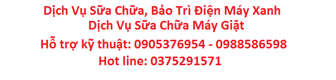
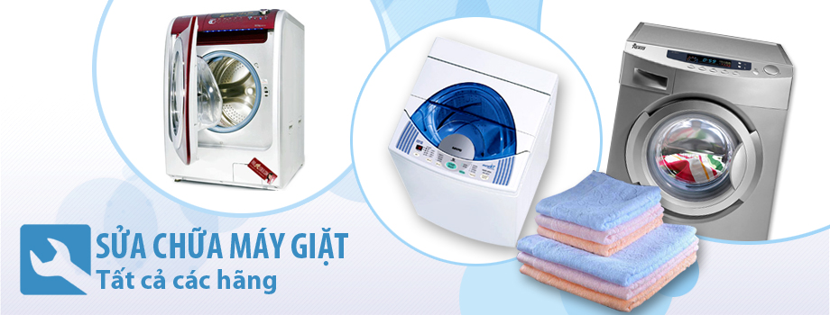

Dịch vụ Sửa máy giặt tại nhà đã được Trung Tâm Dịch Vụ Sửa Chửa Điện Máy Xanh chúng tôi duy trì từ nhiều năm trước, mỗi năm chúng tôi không ngừng học hỏi vươn lên tầm cao mới, và chúng tôi đào tạo ra những kỹ thuật viên chuyên sâu về lĩnh vực sửa chữa máy máy giặt hay về lĩnh vục sửa chữa điện lạnh.
Dịch vụ sửa chữa máy giặt tại nhà với giá cả tốt nhất và nhanh nhất, được các công nhân có tay nghề cao được đào tạo từ trung tâm , được đào tạo tốt về sửa chữa máy giặt tại TP. HCM cùng với kinh nghiệm 10 năm thực tiễn . Trung tâm chúng tôi chuyên sửa các dòng máy giặt , từ đời cũ tới đời mới nhất, các dòng inverter, máy giặt Á, âu,…

Dịch vụ Sửa chữa máy giặt chuyên nghiệp, nhanh chóng uy tín tại nhà.
¬Sửa máy giặt bị hỏng mạch – báo lỗi – điện vào nhưng không chạy – không vắt – vắt kêu
¬Sửa máy giặt bị tràn nước – không vào nước – liệt phím .
Ngoài Dịch Vụ Chuyên Sửa Chữa chúng tôi còn hỗ trợ dịch vụ Vệ Sinh Máy Giặt Tại Nhà với giá hợp lý – chất lượng.
- Vệ sinh các tiếp điểm, giắc cắm của mạch điện tử.
- Tháo rời lồng giặt trong ra khỏi máy giặt.
- Vệ sinh làm sạch bằng nước và chất tẩy cặn.
- Bôi mỡ cho bộ côn, lihợp đuôi số của máy giặt. (sửa máy giặt)
- Tăng chỉnh dây culoa. (Xiết lại ốc, mỏ cò, vệ sinh mâm từ đối với loại máy giặt dẫn động trực tiếp – Inverter – không dùng dây culoa).
Tất cả thiết bị sau khi sửa chữa thay thế đều được bảo hành theo hãng sản xuất và bảo hành trách nhiệm .
Chúng tôi cam kết sẽ làm bạn hài lòng khách hàng với dịch vụ sửa chữa máy giặt giá rẻ.